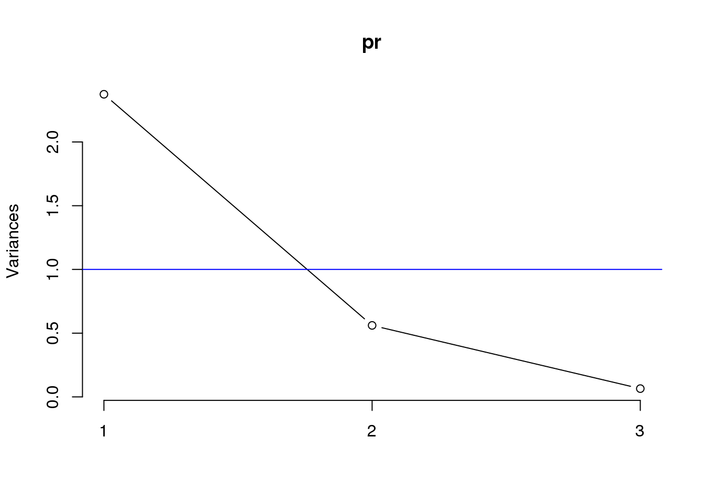
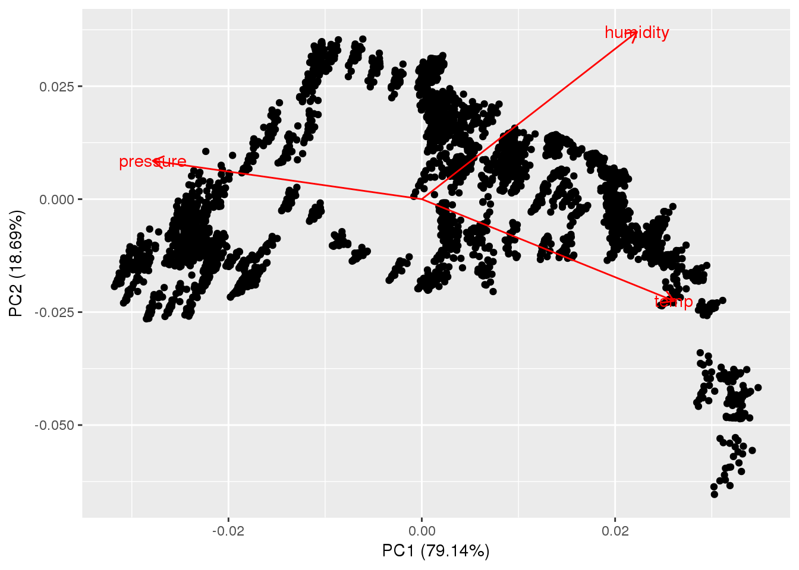
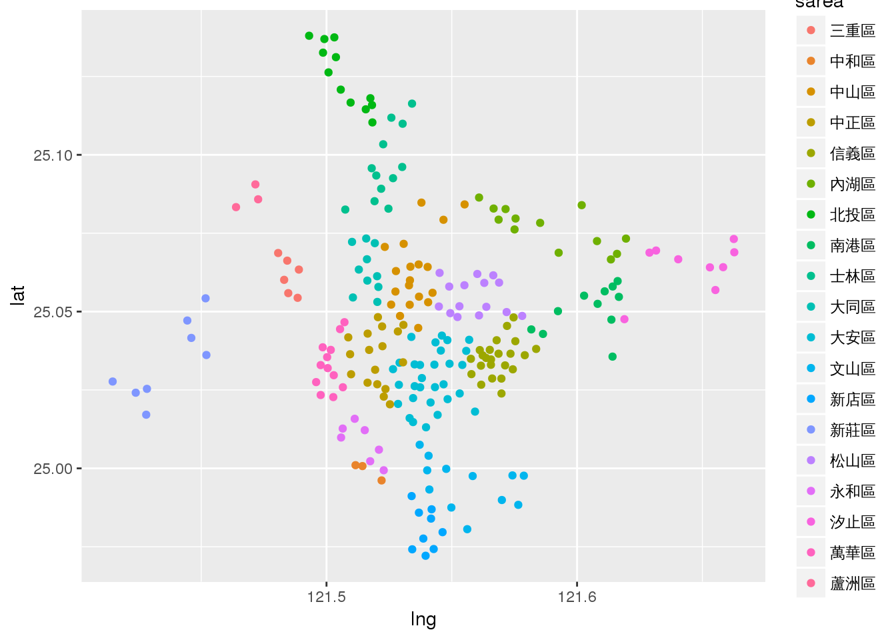
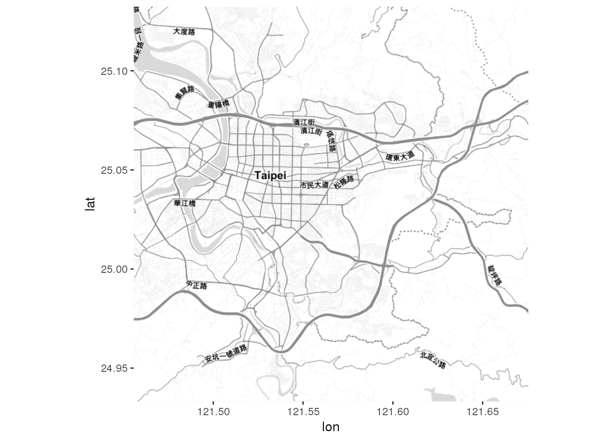
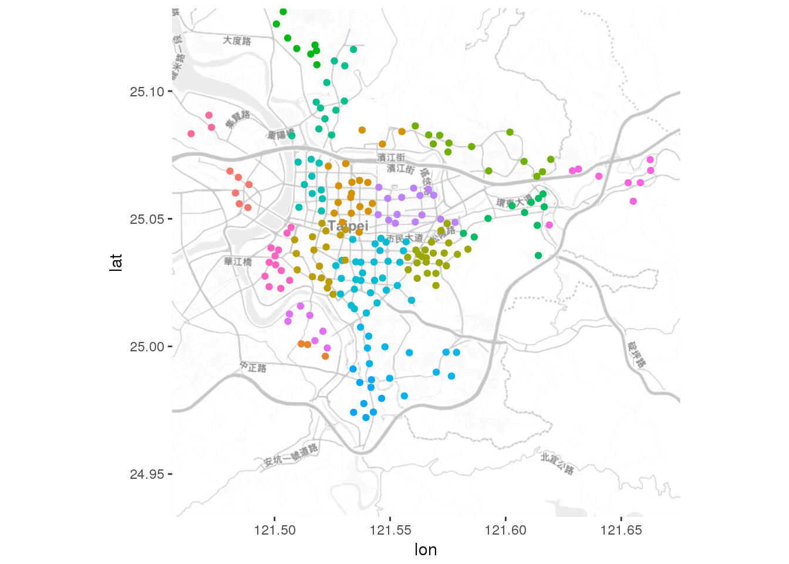
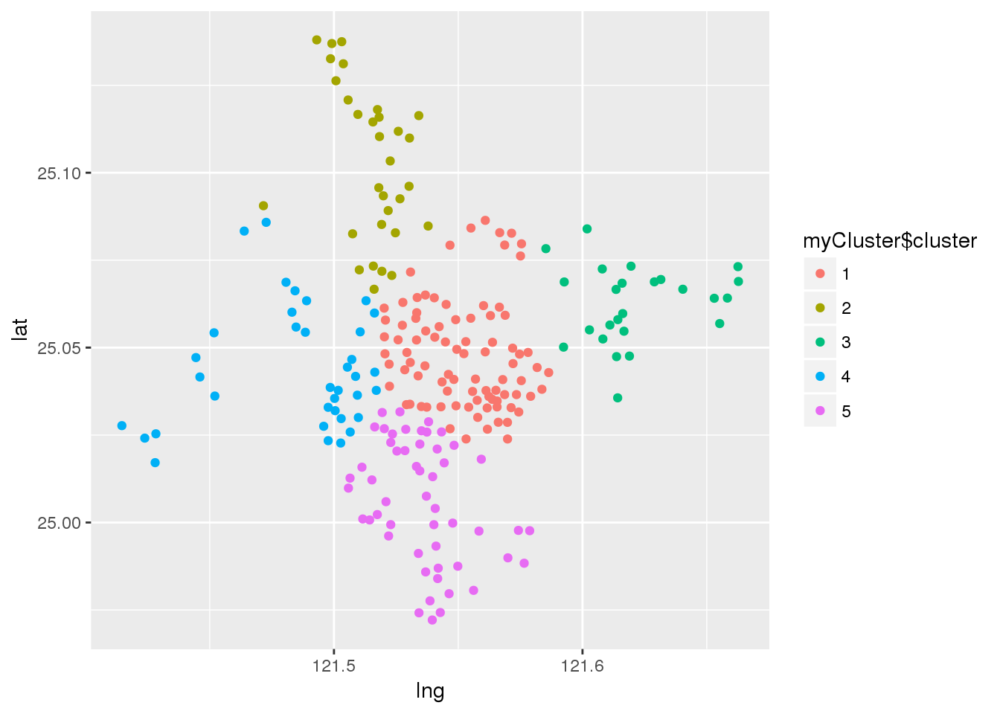
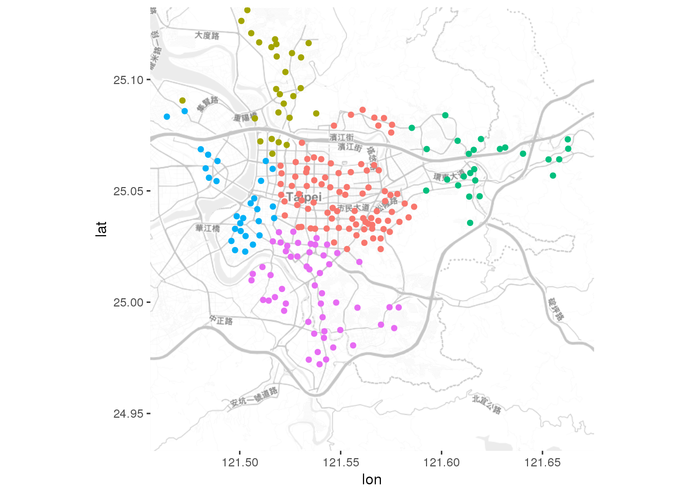
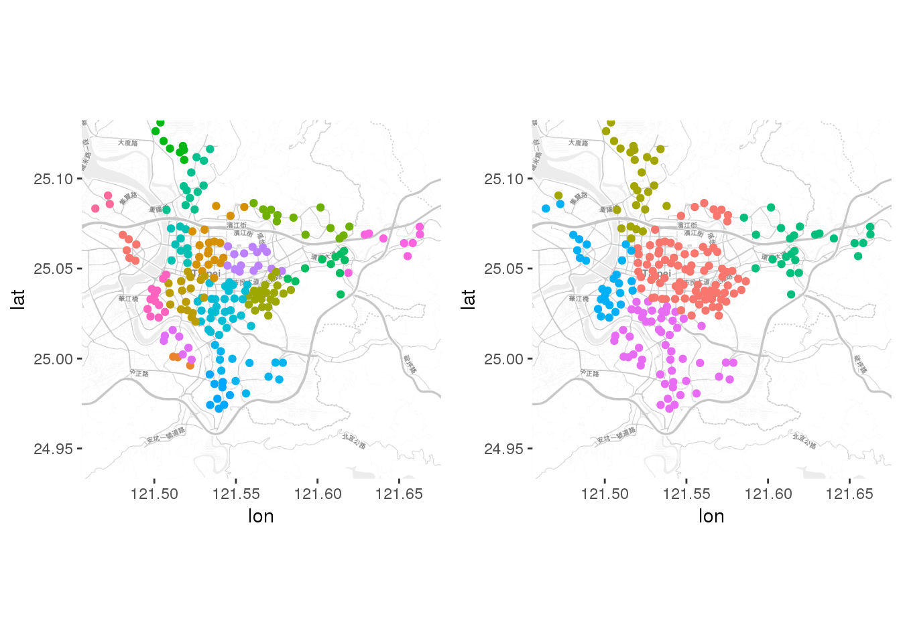

Chapter 9 Multivariate Statistics - Quick Review
Rafe C. H. Liu, LastUpdate: 2018-07-18
9.1 Preliminaries
9.2 Principal Components Analysis
- 主成份分析
- 一種提取變數特徵的演算法，以達到縮減變數維度 (Dimension reduction) 的目的
- When and where do we use PCA?
- References
head(ubike) date hour sno sarea sna lat lng tot sbi bemp temp humidity pressure
1 2014-12-08 15 2 大安區 捷運國父紀念館站(2號出口) 25.04100 121.5569 48 24 22 16.49 89.87 1020.56
2 2014-12-08 15 3 信義區 台北市政府 25.03780 121.5652 40 11 30 16.24 91.76 1020.15
3 2014-12-08 15 4 信義區 市民廣場 25.03604 121.5623 60 40 21 16.31 91.62 1020.36
4 2014-12-08 15 5 信義區 興雅國中 25.03656 121.5687 60 35 26 16.16 92.38 1020.11
5 2014-12-08 15 6 信義區 世貿二館 25.03474 121.5657 80 32 48 16.25 92.32 1020.33
6 2014-12-08 15 7 信義區 信義廣場(台北101) 25.03304 121.5656 80 24 57 16.27 92.58 1020.43# 製作資料集，並將含有 NA 值的觀察過濾掉
dat <- ubike %>% filter(sarea == '信義區') %>%
select(sbi, temp, humidity, pressure) %>% na.omit()
# PCA
pr <- prcomp(~ temp + humidity + pressure,
data = dat,
scale = TRUE) # 正規化
prStandard deviations (1, .., p=3):
[1] 1.5408655 0.7488696 0.2548097
Rotation (n x k) = (3 x 3):
PC1 PC2 PC3
temp 0.5908020 -0.5100526 0.6251394
humidity 0.5039703 0.8383670 0.2077371
pressure -0.6300531 0.1923202 0.7523603summary(pr)Importance of components:
PC1 PC2 PC3
Standard deviation 1.5409 0.7489 0.25481
Proportion of Variance 0.7914 0.1869 0.02164
Cumulative Proportion 0.7914 0.9784 1.00000str(pr)List of 6
$ sdev : num [1:3] 1.541 0.749 0.255
$ rotation: num [1:3, 1:3] 0.591 0.504 -0.63 -0.51 0.838 ...
..- attr(*, "dimnames")=List of 2
.. ..$ : chr [1:3] "temp" "humidity" "pressure"
.. ..$ : chr [1:3] "PC1" "PC2" "PC3"
$ center : Named num [1:3] 16.7 83 1021.1
..- attr(*, "names")= chr [1:3] "temp" "humidity" "pressure"
$ scale : Named num [1:3] 2.54 10.67 3.3
..- attr(*, "names")= chr [1:3] "temp" "humidity" "pressure"
$ x : num [1:3366, 1:3] 0.496 0.466 0.514 0.491 0.488 ...
..- attr(*, "dimnames")=List of 2
.. ..$ : chr [1:3366] "1" "2" "3" "4" ...
.. ..$ : chr [1:3] "PC1" "PC2" "PC3"
$ call : language prcomp(formula = ~temp + humidity + pressure, data = dat, scale = TRUE)
- attr(*, "class")= chr "prcomp"# 特徵向量(原變數的線性組合)
# loadings: 依照係數組成判斷
pr$rotation PC1 PC2 PC3
temp 0.5908020 -0.5100526 0.6251394
humidity 0.5039703 0.8383670 0.2077371
pressure -0.6300531 0.1923202 0.7523603# score
head(pr$x) PC1 PC2 PC3
1 0.4961015 0.7244646 -0.16954624
2 0.4657366 0.7116128 -0.10719870
3 0.5143951 0.7869517 -0.18629316
4 0.4905604 0.7769493 -0.11518197
5 0.4884308 0.7991861 -0.08241585
6 0.4795237 0.7425617 -0.10758756# 陡坡圖(Scree plot): 選擇成分
plot(pr, type="line")
# 主成分分析會將特徵值最大的因素先萃取出來，一般而言特徵值大於1，就是需選擇的因子。
# 用藍線標示出特徵值=1的地方
abline(h=1, col="blue")
# 經過主成份分析後，會轉換成新的以主成份代替的資料集
head(pr$x) PC1 PC2 PC3
1 0.4961015 0.7244646 -0.16954624
2 0.4657366 0.7116128 -0.10719870
3 0.5143951 0.7869517 -0.18629316
4 0.4905604 0.7769493 -0.11518197
5 0.4884308 0.7991861 -0.08241585
6 0.4795237 0.7425617 -0.10758756# https://cran.r-project.org/web/packages/ggfortify/vignettes/plot_pca.html
library(ggfortify)
autoplot(pr, loadings = TRUE, loadings.label = TRUE)
pr$sdev^2 #因子的標準差平方就是特徵值[1] 2.37426635 0.56080567 0.064927989.3 Factor Analysis
- 因素分析
- 與 PCA 相同，都是變數維度縮減的技術
- 探索性因素分析 (Exploratory factor analysis, EFA) 及驗證性因素分析 (Confirmatory factor analysis, CFA)
- 因素分析則更著重於變數間的潛在關係
- 主成分分析(PRINCIPAL COMPONENT ANALYSIS)與因素分析(FACTOR ANALYSIS)
- PCA 為「 Variance Oriented 」方法，因為它可以得到最大的解釋變異
- FA 則稱為「 Correlation Oriented 」方法，因為考慮誤差之後可以更清楚看出抽取出因素與問項之間的真實相關性。
- 數學解的角度來說， PCA 也可看成是 FA 的特例。
- 結構方程式 (Structural Equation Modeling, SEM)
- 驗證性因素分析 (Confirmatory factor analysis, CFA)
- 因素結構已經確定 (透過文獻回顧) 情況下，檢驗觀察變數和潛在變數之關係
- References
fa <- factanal(dat[,2:4], factors = 1)
fa
Call:
factanal(x = dat[, 2:4], factors = 1)
Uniquenesses:
temp humidity pressure
0.172 0.575 0.005
Loadings:
Factor1
temp 0.910
humidity 0.652
pressure -0.998
Factor1
SS loadings 2.248
Proportion Var 0.749
The degrees of freedom for the model is 0 and the fit was 0.156 summary(fa) Length Class Mode
converged 1 -none- logical
loadings 3 loadings numeric
uniquenesses 3 -none- numeric
correlation 9 -none- numeric
criteria 3 -none- numeric
factors 1 -none- numeric
dof 1 -none- numeric
method 1 -none- character
n.obs 1 -none- numeric
call 3 -none- call 9.4 Clustering - kmeans
- 聚類分析，「物以類聚」
- Kmeans
- 距離法，離組中點越近越好
- 組內差異小，組間差異大
- K-Means 分群演算法
- References
- Quiz: 使用分群演算法對台北市腳踏車站進行分群
# Spatial dataset
dat <- ubike %>% select(sna, sarea, lat, lng) %>%
distinct(sna, .keep_all = T)
# 經度(longitude, x)，緯度(latitude, y)
library(ggplot2)
dat %>% ggplot(aes(x = lng, y = lat)) +
geom_point(aes(colour = sarea)) +
theme(text = element_text(family = 'STHeiti')) 
# 繪製地圖
# https://blog.gtwang.org/r/r-ggmap-package-spatial-data-visualization/
library(ggmap)
basemap <- get_map("Taipei, Taiwan", zoom = 12, maptype = "toner-lite", messaging = TRUE)
ggmap(basemap)
p <- ggmap(basemap, darken = c(0.5, "white"))
p1 <- p + geom_point(data = dat, aes(x = lng, y = lat, colour = sarea)) +
theme(legend.position="none")
p1
# K-Means
myCluster <- kmeans(dat[, 3:4], centers = 5, nstart = 20)
myClusterK-means clustering with 5 clusters of sizes 87, 31, 25, 36, 52
Cluster means:
lat lng
1 25.04815 121.5522
2 25.10282 121.5148
3 25.06245 121.6215
4 25.04375 121.4848
5 25.00595 121.5361
Clustering vector:
[1] 1 1 1 1 1 1 1 1 1 1 1 1 1 1 1 1 1 1 5 1 1 3 1 1 3 3 1 5 5 5 1 1 1 1 5 1 5 3 1 3 1 3 3 5 3 1 3 1 1 1 1 1 5 1 1 5 1 1 1 5 5 1 4 4 5 4 4 5 1 1 1 2
[73] 1 1 1 1 2 1 4 5 4 1 4 1 1 1 1 5 4 2 4 1 5 4 1 2 5 1 1 1 5 4 5 4 4 4 2 1 1 1 2 1 2 1 2 2 2 1 4 1 1 2 2 4 5 3 1 3 5 1 5 2 2 2 2 2 1 4 4 5 5 5 5 2
[145] 2 2 2 2 1 5 2 4 2 1 3 1 3 1 1 2 1 5 2 2 5 2 5 4 1 1 1 1 1 1 2 3 5 2 1 5 3 3 3 5 5 3 4 4 4 3 3 3 4 4 4 5 2 4 4 4 3 5 5 5 5 5 3 4 4 4 5 4 5 5 5 5
[217] 5 5 5 4 1 5 5 1 1 3 3 4 5 5 4
Within cluster sum of squares by cluster:
[1] 0.04759593 0.01996608 0.01482504 0.04103994 0.03011591
(between_SS / total_SS = 76.5 %)
Available components:
[1] "cluster" "centers" "totss" "withinss" "tot.withinss" "betweenss" "size" "iter" "ifault" myCluster$cluster <- as.factor(myCluster$cluster)
ggplot(data = dat, aes(x = lng, y = lat, color = myCluster$cluster)) + geom_point()
# 繪製分群後地圖
p2 <- p + geom_point(data = dat, aes(x = lng, y = lat, color = myCluster$cluster)) +
theme(legend.position="none")
p2
# 前後比較
#install.packages('gridExtra')
gridExtra::grid.arrange(p1, p2, nrow = 1)
Rafe C.H. Liu (劉佳欣)
Data Thinking, Machine Learning & E-commerce expert
Contact Info | Linkedin Profile
Data Thinking, Machine Learning & E-commerce expert
Contact Info | Linkedin Profile